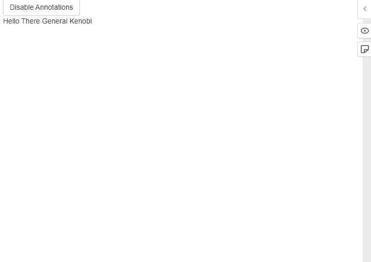

Overview
hypothesis R package allows you to add, share and manage annotations for Shiny applications and R Markdown documents. It is a wrapper of cool hypothes.is tool.

Installation
# Latest development version
remotes::install_github("r-world-devs/hypothesis")Usage
Shiny
Just call useHypothesis() within the app UI.
You can also (optionally) use hypothesisOnOff to allow turning annotations feature on/off with the returned button.
library(shiny)
library(hypothesis)
ui <- fluidPage(
useHypothesis(),
hypothesisOnOff(TRUE),
br(),
"Hello There General Kenobi"
)
server <- function(input, output, session) {
}
shinyApp(ui, server)R Markdown
Just place useHypothesis() in document R chunk.
hypothesisOnOff work great as well.
--- title: "Document" author: "Author" date: "9/21/2022" output: html_document ---```{r setup, include=FALSE} library(hypothesis) knitr::opts_chunk$set(echo = TRUE) hypothesis::useHypothesIs()````r hypothesisOnOff(TRUE)`
Development
Rendering website
- Clone gh-pages branch as
docsfolder:
git clone -b gh-pages git@github.com:r-world-devs/hypothesis.git docs- Render website
pkgdown::build_site(). - Move to
docs, commit and push.
Getting help
In a case you found any bugs, have feature request or general question please file an issue at the package Github. You may also contact the package author directly via email at krystian8207@gmail.com.